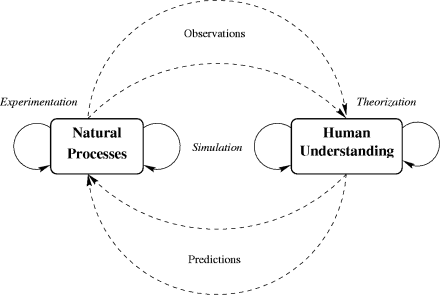

|
The bottom line here is that whenever something is so rich as to be related to something akin to a universal computer, it is impossible (in the general case) to completely understand the underlying phenomenon. This has deep implications for how we do science. Consider the figure below (from Chapter 24).
|
 |
In the past, there were two different methods for how science was performed. In one method, an experimentalist fiddles with some natural phenomenon so that data can be collected in the form of observations. These data are then compared with the current state of knowledge.
Coming from the opposite direction, a theorist derives a model for how a natural process works. The new model is then used to make predictions for how the natural process will behave at a future time.
With the advent of computers, a new and hybrid method of science has emerged. This new type of scientist, known as a simulationist, simultaneously performs experimentation in a universe of theories by simulating natural phenomena within the confines of a computer.
Neither of these methods of performing science is intrinsically superior to the others. Each of them are, in a sense, incomplete. But simulation allows for a type of exploration that neither experimentation nor theorization can provide. Pure theory fails when a phenomenon does not obey models that can be analytically solved. Pure experimentation fails when complex effects cannot be correlated to simple causes. But simulation hovers about these two extremes, allowing for a new type of science that mirrors (if only approximately) the complexity and beauty that we see in the real world.
The good news here is that there will never be an end to science.
For science to end, one of two things must happen: (1) we would need
a Theory of Everything that could be used to predict and explain all
things, or (2) we would reach a clear and identifiable point at which
no further progress could be made. But because nature's most
beautiful phenomenon contain computational richness, there will always
be surprises and new discoveries just beyond our reach.
Copyright © Gary William Flake, 1998-2005. All Rights Reserved.